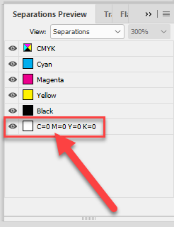
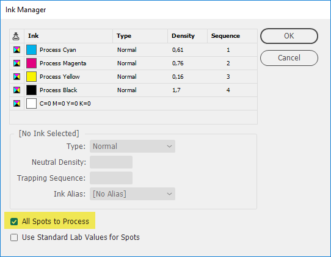
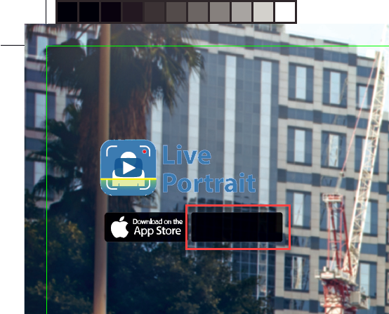
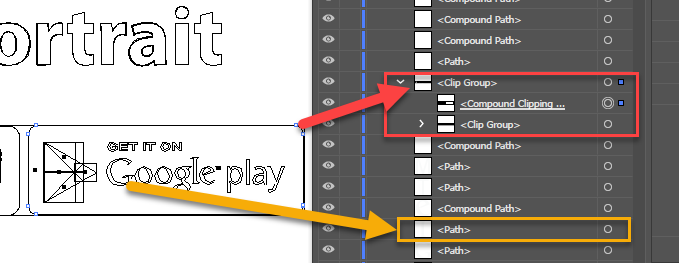
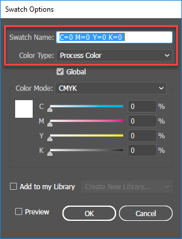
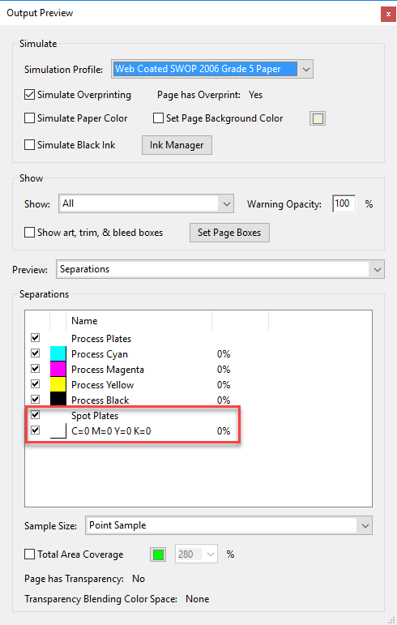

Using All Spots to Process in the Ink Manager may lead to unexpected results after processing by RIP
Recently, before making a PDF for sending to our printing shop, I was checking an ad: two EPSes placed in InDesign document. In the Separation Preview panel, I noticed that it contains a superfluous spot color originated from one of the EPSes.

We were far behind the schedule and I didn’t want to waste the precious time -- even a couple of minutes -- to start Illustrator and convert the swatch to process, as I usually do; instead, I followed the advice of our RIP-guys and turned the ‘All Spots to Process’ check box on.

Now let’s see what happened.
Here is the PDF file before RIPping
And here is the same file after processing by RIP

Note: the Google play logo has disappeared. Obviously, the advertiser wasn’t happy about this!
For some unconceivable reason, it moved behind the black rectangle with rounded corners.

The problem doesn’t occur, if I convert the swatch to process in Illustrator, like so:

By the way, although with the ‘All Spots to Process’ check box turned on, the spot color disappears in InDesign, it is still visible in the exported PDF file.

If someone is interested to play with it, here is the whole InDesign package.